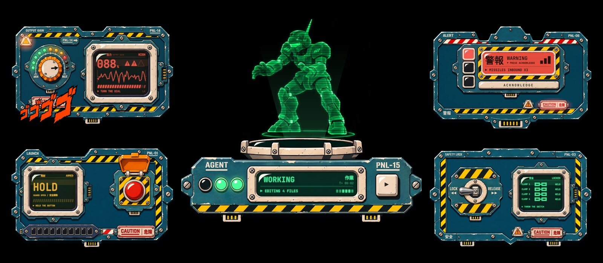

Eleven ordinary controls as the cockpit of a 1990s giant-robot anime. The pieces are paintings, the screens are drawn live, and every one reacts when you use it. Each is a single file with no dependencies.
Everything here is live: use the controls. They are drawn for a dark page. The shaking, impact frames and cut-ins are skipped for prefers-reduced-motion.